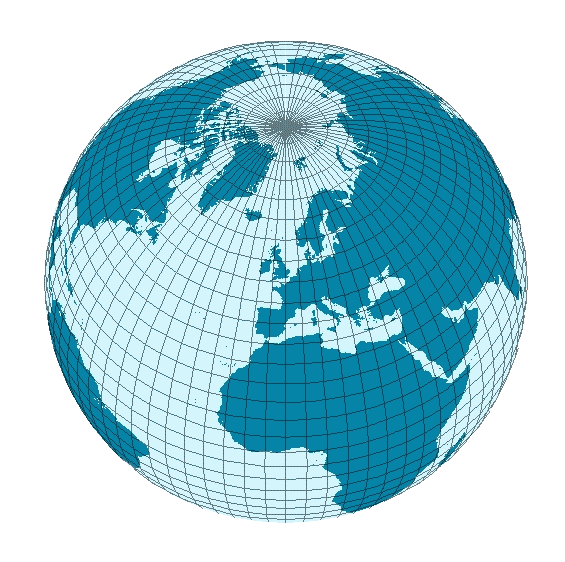

Home
Coordenadas en seccion meridiana
Coordenadas Rectangulares
Longitud de Arco Meridiano
Radios de Curvatura
Area Cuadrilatero
Linea Geodesica
Puntos corte Satelite
Exceso Esferico Triangulo
Exceso Esferico Cuadrilatero
Resistencia Cuadrilatero
Directo Puissant
Inverso Puissant
Aplicación Geodesia Geometrica
Sebastian Forero Zapata
Estudiante Ingeniería Catastral y Geodesia
